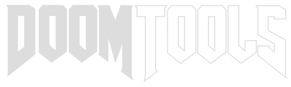

WadTex Help
WADTex v1.1.0 by Matt Tropiano (using DoomStruct v2.14.2)
Usage: wadtex [--help | -h | --version] [file] [mode] [switches]
--help Prints help and exits.
-h
--version Prints version, and exits.
[file]:
<filename> The WAD file.
[mode]:
--export [dstfile] Export mode.
-x [dstfile] Exports PNAMES and texture lump named [dstfile] from
[file] to [dstfile].
--import [srcfile] Import mode.
-i [srcfile] Imports a DEUTEX file from [srcfile] into [file]
and adds/modifies PNAMES and the texture lump (name is
taken from file name).
WAD file is created if it doesn't exist.
--add Additive mode. If specified on import, this will
-a append the new data to an existing texture lump.
PNAMES may still be altered.
--entry-name [name] Use the provided entry name instead of the file name
-n [name] for the entry name.
--strife Force Strife format on import (conversion or new).
[switches]:
--verbose Prints verbose output.
-v